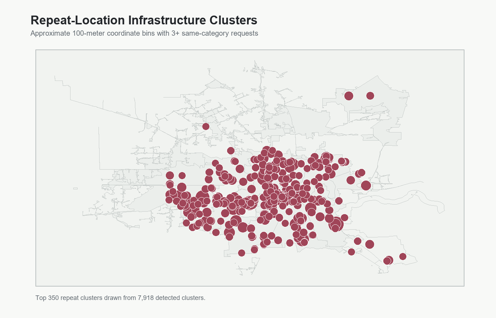
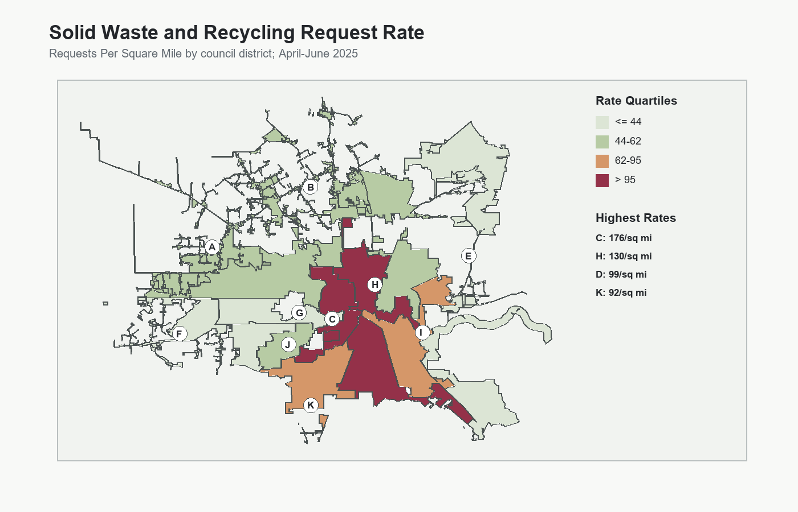
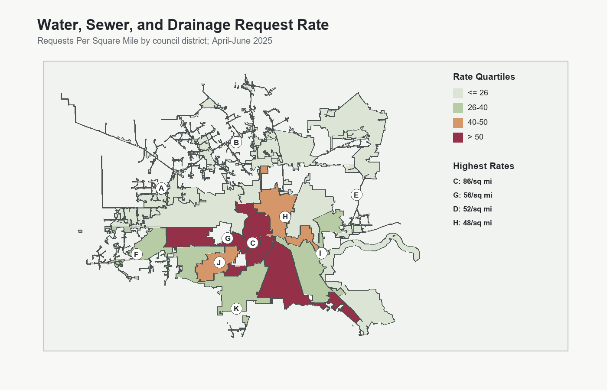
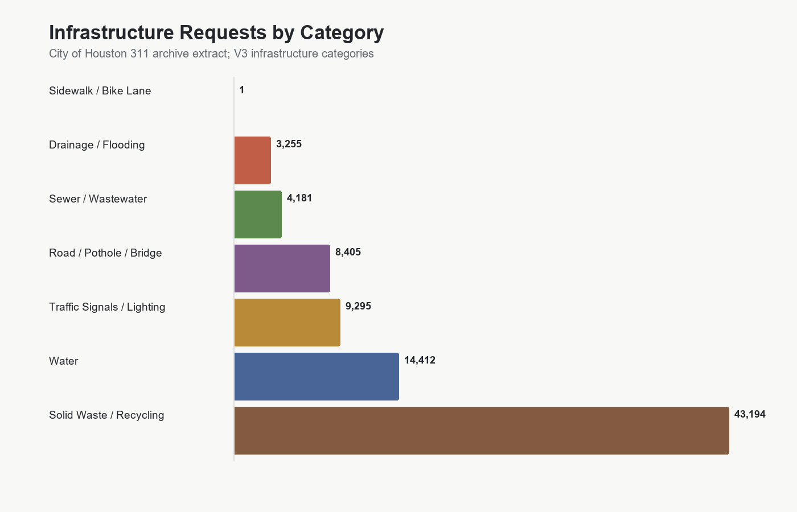

Houston 311 Infrastructure Service Request Analysis
This project identifies infrastructure-service burden using City of Houston 311 records, official council district boundaries, point-in-polygon district assignment, repeat-location screening, and static GIS outputs.
Main Map

Supporting Outputs




Key Findings
- 82,743 infrastructure-related 311 records were processed.
- Solid Waste / Recycling is the largest standardized category.
- District C ranks Very High in the V3 burden score, with District H also Very High.
- Repeat-location screening detected 7,945 approximate coordinate/category clusters.